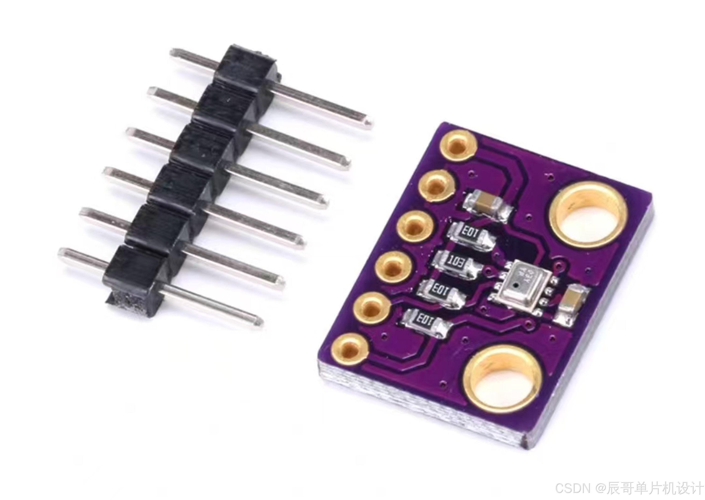
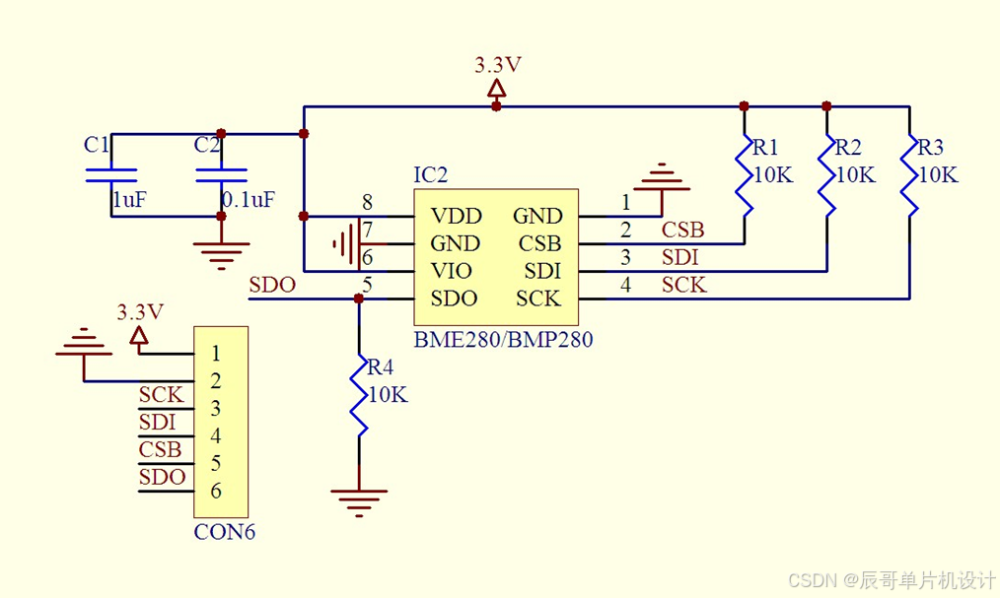
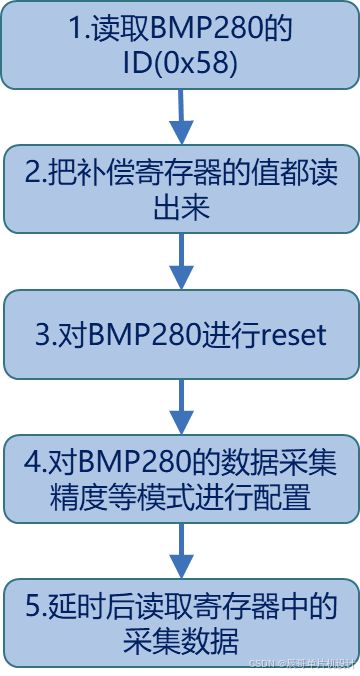
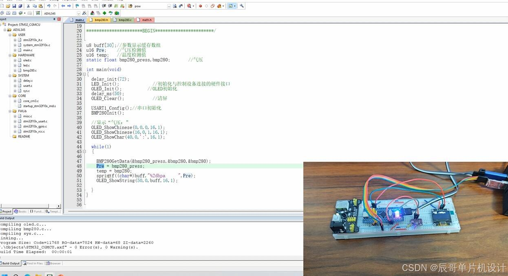

GitCode
GitCode


目录
一、介绍
BMP280是一款基于博世公司APSM工艺的小封装低功耗数字复合传感器，它可以测量环境温度和大气压强。气压敏感元件是一个低噪高精度高分辨率绝对大气压力压电式感应元件；温度感测元件具有低噪高分辨率特性，温度值可以对气压进行温度补偿自校正。

以下是BMP280气压传感器的参数：
| 供电电压 | DC：1.7~3.6V |
| 温度测量范围 | 0~65℃ |
| 气压测量范围 | 300~1100hPa(百帕斯卡) |
| 气压测量误差 | ±1hPa |
| 数字接口类型 | IIC(从模式3.4MHz) 或SPI(3线或4线制从模式10MHz) |
哔哩哔哩视频：
BMP280气压传感器详解（STM32）
（资料分享见文末）
二、传感器原理
1.原理图

2.引脚描述
| 引脚名称 | 描述 |
| VCC | 电源正 |
| GND | 地 |
| SCL | IIC串行时钟线 |
| SDA | IIC串行数据线 3线SPI串行数据输入/输出端口 4线SPI串行数据输入端口 |
| CSB | 片选，接高电平(默认)为IIC通信，低电平为SPI通信 |
| SDO | IIC地址选择位 4线SPI串行输出端口 |
3.传感器数据获取流程
BMP280的测试启动流程 :

BMP280内部有一个温度传感器和一个压力传感器，通过 I2C接口，可读取温度和压力的数据
BMP280八位的器件地址为 111011X0，其中 X为 SDO配置状态，SDO低电平时器件地址为 11101100（0XEC），SDO高电平时器件地址为 11101110（0XEE）。从原理图可以看到，SDO默认接地，那么咱们不需要连接任何东西，在找IIC地址时就是（0xEC）
BMP280读取到的数据是芯片内部 ADC转换后的原始数值，并非最终的大气压力值。需要进行转换才能得到气压值，根据 BMP280的寄存器中的系数进行计算转换。
三、程序设计
1.使用STM32F103C8T6读取BMP280气压传感器采集的数据
2.将读取得到的温湿度数据同时在OLED上显示
| BMP280_SCL | PB6 |
| BMP280_SDA | PB7 |
| OLED_SCL | PB11 |
| OLED_SDA | PB10 |
| 串口 | 串口1 |
main.c文件
- #include "led.h"
- #include "delay.h"
- #include "sys.h"
- #include "usart.h"
- #include "OLED.h"
- #include "string.h"
- #include "bmp280.h"
-
- /*****************辰哥单片机设计******************
- STM32
- * 项目 : BMP280气压传感器实验
- * 版本 : V1.0
- * 日期 : 2024.8.20
- * MCU : STM32F103C8T6
- * 接口 : 见bmp280.h
- * BILIBILI : 辰哥单片机设计
- * CSDN : 辰哥单片机设计
- * 作者 : 辰哥
- **********************BEGIN***********************/
-
-
- u8 buff[30];//参数显示缓存数组
- u16 Pre; //气压检测值
-
- static float bmp280_press,bmp280; //气压
-
- int main(void)
- {
- delay_init(72);
- LED_Init(); //初始化与控制设备连接的硬件接口
- OLED_Init(); //OLED初始化
- delay_ms(50);
- OLED_Clear(); //清屏
-
- USART1_Config();//串口初始化
- BMP280Init();
-
- //显示“气压：”
- OLED_ShowChinese(0,0,0,16,1);
- OLED_ShowChinese(16,0,1,16,1);
- OLED_ShowChar(40,0,':',16,1);
-
- while(1)
- {
-
- BMP280GetData(&bmp280_press,&bmp280,&bmp280);
- Pre = bmp280_press;
- sprintf((char*)buff,"%2dhpa ",Pre);
- OLED_ShowString(50,0,buff,16,1);
-
- }
- }
-
bmp280.h文件
- #ifndef __BMP280_H
- #define __BMP280_H
- #include "sys.h"
- #include "stdbool.h"
-
- /*****************辰哥单片机设计******************
- STM32
- * 文件 : BMP280传感器h文件
- * 版本 : V1.0
- * 日期 : 2024.8.20
- * MCU : STM32F103C8T6
- * 接口 : 见代码
- * BILIBILI : 辰哥单片机设计
- * CSDN : 辰哥单片机设计
- * 作者 : 辰哥
- **********************BEGIN***********************/
-
- //==============================================BMP280硬件接口==================================================
- #define BMP280_IIC_CLK RCC_APB2Periph_GPIOB
- #define BMP280_IIC_PORT GPIOB
- #define BMP280_IIC_SCL_PIN GPIO_Pin_6
- #define BMP280_IIC_SDA_PIN GPIO_Pin_7
-
- #define BMP280_IIC_SCL PBout(6)
- #define BMP280_IIC_SDA PBout(7)
- #define BMP280_READ_SDA PBin(7) //输入SDA
-
- //=============================================================================================================
-
-
- #define BMP280_ADDR (0xEC)
- #define BMP280_DEFAULT_CHIP_ID (0x58)
-
- #define BMP280_CHIP_ID (0xD0) /* Chip ID Register */
- #define BMP280_RST_REG (0xE0) /* Softreset Register */
- #define BMP280_STAT_REG (0xF3) /* Status Register */
- #define BMP280_CTRL_MEAS_REG (0xF4) /* Ctrl Measure Register */
- #define BMP280_CONFIG_REG (0xF5) /* Configuration Register */
- #define BMP280_PRESSURE_MSB_REG (0xF7) /* Pressure MSB Register */
- #define BMP280_PRESSURE_LSB_REG (0xF8) /* Pressure LSB Register */
- #define BMP280_PRESSURE_XLSB_REG (0xF9) /* Pressure XLSB Register */
- #define BMP280_TEMPERATURE_MSB_REG (0xFA) /* Temperature MSB Reg */
- #define BMP280_TEMPERATURE_LSB_REG (0xFB) /* Temperature LSB Reg */
- #define BMP280_TEMPERATURE_XLSB_REG (0xFC) /* Temperature XLSB Reg */
-
- #define BMP280_SLEEP_MODE (0x00)
- #define BMP280_FORCED_MODE (0x01)
- #define BMP280_NORMAL_MODE (0x03)
-
- #define BMP280_TEMPERATURE_CALIB_DIG_T1_LSB_REG (0x88)
- #define BMP280_PRESSURE_TEMPERATURE_CALIB_DATA_LENGTH (24)
- #define BMP280_DATA_FRAME_SIZE (6)
-
- #define BMP280_OVERSAMP_SKIPPED (0x00)
- #define BMP280_OVERSAMP_1X (0x01)
- #define BMP280_OVERSAMP_2X (0x02)
- #define BMP280_OVERSAMP_4X (0x03)
- #define BMP280_OVERSAMP_8X (0x04)
- #define BMP280_OVERSAMP_16X (0x05)
-
- //IIC所有操作函数
- void BMP_IIC_Init(void); //初始化IIC的IO口
- void BMP_IIC_Start(void); //发送IIC开始信号
- void BMP_IIC_Stop(void); //发送IIC停止信号
- void BMP_IIC_Send_Byte(u8 txd); //IIC发送一个字节
- u8 BMP_IIC_Read_Byte(unsigned char ack); //IIC读取一个字节
- u8 BMP_IIC_Wait_Ack(void); //IIC等待ACK信号
- void BMP_IIC_Ack(void); //IIC发送ACK信号
- void BMP_IIC_NAck(void); //IIC不发送ACK信号
-
- void IIC_Write_One_Byte(u8 daddr,u8 addr,u8 data);
- u8 IIC_Read_One_Byte(u8 daddr,u8 addr);
-
- u8 iicDevReadByte(u8 devaddr,u8 addr); /*读一字节*/
- void iicDevWriteByte(u8 devaddr,u8 addr,u8 data); /*写一字节*/
- void iicDevRead(u8 devaddr,u8 addr,u8 len,u8 *rbuf); /*连续读取多个字节*/
- void iicDevWrite(u8 devaddr,u8 addr,u8 len,u8 *wbuf); /*连续写入多个字节*/
-
-
- bool BMP280Init(void);
- void BMP280GetData(float* pressure, float* temperature, float* asl);
-
-
- #endif
bmp280.c文件
- #include <math.h>
- #include "stdbool.h"
- #include "bmp280.h"
- #include "delay.h"
- #include "usart.h"
-
- /*****************辰哥单片机设计******************
- STM32
- * 文件 : BMP280传感器c文件
- * 版本 : V1.0
- * 日期 : 2024.8.20
- * MCU : STM32F103C8T6
- * 接口 : 见bmp280.h文件
- * BILIBILI : 辰哥单片机设计
- * CSDN : 辰哥单片机设计
- * 作者 : 辰哥
- **********************BEGIN***********************/
-
-
- //注意：
- //模块5V供电
- //SD0接地,模块使用IIC通信
-
- /*bmp280 气压和温度过采样 工作模式*/
- #define BMP280_PRESSURE_OSR (BMP280_OVERSAMP_8X)
- #define BMP280_TEMPERATURE_OSR (BMP280_OVERSAMP_16X)
- #define BMP280_MODE (BMP280_PRESSURE_OSR<<2|BMP280_TEMPERATURE_OSR<<5|BMP280_NORMAL_MODE)
-
- typedef struct
- {
- u16 dig_T1; /* calibration T1 data */
- s16 dig_T2; /* calibration T2 data */
- s16 dig_T3; /* calibration T3 data */
- u16 dig_P1; /* calibration P1 data */
- s16 dig_P2; /* calibration P2 data */
- s16 dig_P3; /* calibration P3 data */
- s16 dig_P4; /* calibration P4 data */
- s16 dig_P5; /* calibration P5 data */
- s16 dig_P6; /* calibration P6 data */
- s16 dig_P7; /* calibration P7 data */
- s16 dig_P8; /* calibration P8 data */
- s16 dig_P9; /* calibration P9 data */
- s32 t_fine; /* calibration t_fine data */
- } bmp280Calib;
-
- bmp280Calib bmp280Cal;
-
- static u8 bmp280ID=0;
- static bool isInit=false;
- static s32 bmp280RawPressure=0;
- static s32 bmp280RawTemperature=0;
-
- static void bmp280GetPressure(void);
- static void presssureFilter(float* in,float* out);
- static float bmp280PressureToAltitude(float* pressure/*, float* groundPressure, float* groundTemp*/);
-
- //BMP280引脚输出模式控制
- void BMP280_IIC_SDA_OUT(void)//SDA输出方向配置
- {
- GPIO_InitTypeDef GPIO_InitStructure;
-
- GPIO_InitStructure.GPIO_Pin=BMP280_IIC_SDA_PIN;
- GPIO_InitStructure.GPIO_Speed=GPIO_Speed_50MHz;
- GPIO_InitStructure.GPIO_Mode=GPIO_Mode_Out_PP;//SDA推挽输出
- GPIO_Init(BMP280_IIC_PORT,&GPIO_InitStructure);
-
- }
-
- void BMP280_IIC_SDA_IN(void)//SDA输入方向配置
- {
- GPIO_InitTypeDef GPIO_InitStructure;
-
- GPIO_InitStructure.GPIO_Pin=BMP280_IIC_SDA_PIN;
- GPIO_InitStructure.GPIO_Speed=GPIO_Speed_50MHz;
- GPIO_InitStructure.GPIO_Mode=GPIO_Mode_IPU;//SCL上拉输入
- GPIO_Init(BMP280_IIC_PORT,&GPIO_InitStructure);
-
- }
-
- //初始化IIC
- void BMP_IIC_Init(void)
- {
- GPIO_InitTypeDef GPIO_InitStructure;
-
- RCC_APB2PeriphClockCmd(BMP280_IIC_CLK, ENABLE );
-
- GPIO_InitStructure.GPIO_Pin=BMP280_IIC_SCL_PIN|BMP280_IIC_SDA_PIN;
- GPIO_InitStructure.GPIO_Mode=GPIO_Mode_Out_PP ; //推挽输出
- GPIO_InitStructure.GPIO_Speed=GPIO_Speed_50MHz;
- GPIO_Init(BMP280_IIC_PORT,&GPIO_InitStructure);
-
- BMP280_IIC_SCL=1;
- BMP280_IIC_SDA=1;
-
- }
- //产生IIC起始信号
- void BMP_IIC_Start(void)
- {
- BMP280_IIC_SDA_OUT(); //sda线输出
- BMP280_IIC_SDA=1;
- BMP280_IIC_SCL=1;
- delay_us(4);
- BMP280_IIC_SDA=0; //START:when CLK is high,DATA change form high to low
- delay_us(4);
- BMP280_IIC_SCL=0; //钳住I2C总线，准备发送或接收数据
- }
- //产生IIC停止信号
- void BMP_IIC_Stop(void)
- {
- BMP280_IIC_SDA_OUT(); //sda线输出
- BMP280_IIC_SCL=0;
- BMP280_IIC_SDA=0; //STOP:when CLK is high DATA change form low to high
- delay_us(4);
- BMP280_IIC_SCL=1;
- BMP280_IIC_SDA=1; //发送I2C总线结束信号
- delay_us(4);
- }
- //等待应答信号到来
- //返回值：1，接收应答失败
- // 0，接收应答成功
- u8 BMP_IIC_Wait_Ack(void)
- {
- u8 ucErrTime=0;
- BMP280_IIC_SDA_IN(); //SDA设置为输入
- BMP280_IIC_SDA=1;delay_us(1);
- BMP280_IIC_SCL=1;delay_us(1);
- while(BMP280_READ_SDA)
- {
- ucErrTime++;
- if(ucErrTime>250)
- {
- BMP_IIC_Stop();
- return 1;
- }
- }
- BMP280_IIC_SCL=0; //时钟输出0
- return 0;
- }
- //产生ACK应答
- void BMP_IIC_Ack(void)
- {
- BMP280_IIC_SCL=0;
- BMP280_IIC_SDA_OUT();
- BMP280_IIC_SDA=0;
- delay_us(2);
- BMP280_IIC_SCL=1;
- delay_us(2);
- BMP280_IIC_SCL=0;
- }
- //不产生ACK应答
- void BMP_IIC_NAck(void)
- {
- BMP280_IIC_SCL=0;
- BMP280_IIC_SDA_OUT();
- BMP280_IIC_SDA=1;
- delay_us(2);
- BMP280_IIC_SCL=1;
- delay_us(2);
- BMP280_IIC_SCL=0;
- }
- //IIC发送一个字节
- //返回从机有无应答
- //1，有应答
- //0，无应答
- void BMP_IIC_Send_Byte(u8 txd)
- {
- u8 t;
- BMP280_IIC_SDA_OUT();
- BMP280_IIC_SCL=0; //拉低时钟开始数据传输
- for(t=0;t<8;t++)
- {
- BMP280_IIC_SDA=(txd&0x80)>>7;
- txd<<=1;
- delay_us(2); //对TEA5767这三个延时都是必须的
- BMP280_IIC_SCL=1;
- delay_us(2);
- BMP280_IIC_SCL=0;
- delay_us(2);
- }
- }
- //读1个字节，ack=1时，发送ACK，ack=0，发送nACK
- u8 BMP_IIC_Read_Byte(unsigned char ack)
- {
- unsigned char i,receive=0;
- BMP280_IIC_SDA_IN(); //SDA设置为输入
- for(i=0;i<8;i++ )
- {
- BMP280_IIC_SCL=0;
- delay_us(2);
- BMP280_IIC_SCL=1;
- receive<<=1;
- if(BMP280_READ_SDA)receive++;
- delay_us(1);
- }
- if (!ack)
- BMP_IIC_NAck(); //发送nACK
- else
- BMP_IIC_Ack(); //发送ACK
- return receive;
- }
-
- //从指定地址读出一个数据
- //ReadAddr:开始读数的地址
- //返回值 :读到的数据
- u8 iicDevReadByte(u8 devaddr,u8 addr)
- {
- u8 temp=0;
- BMP_IIC_Start();
- BMP_IIC_Send_Byte(devaddr); //发送器件写命令
- BMP_IIC_Wait_Ack();
- BMP_IIC_Send_Byte(addr); //发送低地址
- BMP_IIC_Wait_Ack();
-
- BMP_IIC_Start();
- BMP_IIC_Send_Byte(devaddr|1); //发送器件读命令
- BMP_IIC_Wait_Ack();
- temp=BMP_IIC_Read_Byte(0);
- BMP_IIC_Stop(); //产生一个停止条件
- return temp;
- }
-
- //连续读多个字节
- //addr:起始地址
- //rbuf:读数据缓存
- //len:数据长度
- void iicDevRead(u8 devaddr,u8 addr,u8 len,u8 *rbuf)
- {
- int i=0;
- BMP_IIC_Start();
- BMP_IIC_Send_Byte(devaddr);
- BMP_IIC_Wait_Ack();
- BMP_IIC_Send_Byte(addr); //地址自增
- BMP_IIC_Wait_Ack();
-
- BMP_IIC_Start();
- BMP_IIC_Send_Byte(devaddr|1);
- BMP_IIC_Wait_Ack();
- for(i=0; i<len; i++)
- {
- if(i==len-1)
- {
- rbuf[i]=BMP_IIC_Read_Byte(0); //最后一个字节不应答
- }
- else
- rbuf[i]=BMP_IIC_Read_Byte(1);
- }
- BMP_IIC_Stop( );
- }
-
- //从指定地址写入一个数据
- //WriteAddr :写入数据的目的地址
- //DataToWrite:要写入的数据
- void iicDevWriteByte(u8 devaddr,u8 addr,u8 data)
- {
- BMP_IIC_Start();
- BMP_IIC_Send_Byte(devaddr); //发送器件写命令
- BMP_IIC_Wait_Ack();
- BMP_IIC_Send_Byte(addr); //发送低地址
- BMP_IIC_Wait_Ack();
- BMP_IIC_Send_Byte(data); //发送字节
- BMP_IIC_Wait_Ack();
- BMP_IIC_Stop(); //产生一个停止条件
- }
-
- //连续写多个字节
- //addr:起始地址
- //wbuf:写数据缓存
- //len:数据的长度
- void iicDevWrite(u8 devaddr,u8 addr,u8 len,u8 *wbuf)
- {
- int i=0;
- BMP_IIC_Start();
- BMP_IIC_Send_Byte(devaddr);
- BMP_IIC_Wait_Ack();
- BMP_IIC_Send_Byte(addr); //地址自增
- BMP_IIC_Wait_Ack();
- for(i=0; i<len; i++)
- {
- BMP_IIC_Send_Byte(wbuf[i]);
- BMP_IIC_Wait_Ack();
- }
- BMP_IIC_Stop( );
- }
-
-
-
- bool BMP280Init(void)
- {
- if (isInit)
- return true;
-
- BMP_IIC_Init(); /*初始化I2C*/
- delay_ms(20);
-
- bmp280ID=iicDevReadByte(BMP280_ADDR,BMP280_CHIP_ID); /* 读取bmp280 ID*/
-
- if(bmp280ID==BMP280_DEFAULT_CHIP_ID)
- printf("BMP280 ID IS: 0x%X\n",bmp280ID);
- else
- return false;
-
- /* 读取校准数据 */
- iicDevRead(BMP280_ADDR,BMP280_TEMPERATURE_CALIB_DIG_T1_LSB_REG,24,(u8 *)&bmp280Cal);
- iicDevWriteByte(BMP280_ADDR,BMP280_CTRL_MEAS_REG,BMP280_MODE);
- iicDevWriteByte(BMP280_ADDR,BMP280_CONFIG_REG,5<<2); /*配置IIR滤波*/
-
- isInit=true;
- return true;
- }
-
- static void bmp280GetPressure(void)
- {
- u8 data[BMP280_DATA_FRAME_SIZE];
-
- // read data from sensor
- iicDevRead(BMP280_ADDR,BMP280_PRESSURE_MSB_REG,BMP280_DATA_FRAME_SIZE,data);
- bmp280RawPressure=(s32)((((uint32_t)(data[0]))<<12)|(((uint32_t)(data[1]))<<4)|((uint32_t)data[2]>>4));
- bmp280RawTemperature=(s32)((((uint32_t)(data[3]))<<12)|(((uint32_t)(data[4]))<<4)|((uint32_t)data[5]>>4));
- }
-
- // Returns temperature in DegC, resolution is 0.01 DegC. Output value of "5123" equals 51.23 DegC
- // t_fine carries fine temperature as global value
- static s32 bmp280CompensateT(s32 adcT)
- {
- s32 var1,var2,T;
-
- var1=((((adcT>>3)-((s32)bmp280Cal.dig_T1<<1)))*((s32)bmp280Cal.dig_T2))>>11;
- var2=(((((adcT>>4)-((s32)bmp280Cal.dig_T1))*((adcT>>4)-((s32)bmp280Cal.dig_T1)))>>12)*((s32)bmp280Cal.dig_T3))>>14;
- bmp280Cal.t_fine=var1+var2;
-
- T=(bmp280Cal.t_fine*5+128)>>8;
-
- return T;
- }
-
- // 以 Q24.8 格式（24 个整数位和 8 个小数位）将压力以 Pa 为单位返回为无符号 32 位整数。
- // “24674867”的输出值表示 24674867/256 = 96386.2 Pa = 963.862 hPa
- static uint32_t bmp280CompensateP(s32 adcP)
- {
- int64_t var1,var2,p;
- var1=((int64_t)bmp280Cal.t_fine)-128000;
- var2=var1*var1*(int64_t)bmp280Cal.dig_P6;
- var2=var2+((var1*(int64_t)bmp280Cal.dig_P5)<<17);
- var2=var2+(((int64_t)bmp280Cal.dig_P4)<<35);
- var1=((var1*var1*(int64_t)bmp280Cal.dig_P3)>>8)+((var1*(int64_t)bmp280Cal.dig_P2)<<12);
- var1=(((((int64_t)1)<<47)+var1))*((int64_t)bmp280Cal.dig_P1)>>33;
- if (var1==0)
- return 0;
- p=1048576-adcP;
- p=(((p<<31)-var2)*3125)/var1;
- var1=(((int64_t)bmp280Cal.dig_P9)*(p>>13)*(p>>13))>>25;
- var2=(((int64_t)bmp280Cal.dig_P8)*p)>>19;
- p=((p+var1+var2)>>8)+(((int64_t)bmp280Cal.dig_P7)<<4);
- return(uint32_t)p;
- }
-
- #define FILTER_NUM 5
- #define FILTER_A 0.1f
-
- /*限幅平均滤波法*/
- static void presssureFilter(float* in,float* out)
- {
- static u8 i=0;
- static float filter_buf[FILTER_NUM]={0.0};
- double filter_sum=0.0;
- u8 cnt=0;
- float deta;
-
- if(filter_buf[i]==0.0f)
- {
- filter_buf[i]=*in;
- *out=*in;
- if(++i>=FILTER_NUM)
- i=0;
- }
- else
- {
- if(i)
- deta=*in-filter_buf[i-1];
- else
- deta=*in-filter_buf[FILTER_NUM-1];
-
- if(fabs(deta)<FILTER_A)
- {
- filter_buf[i]=*in;
- if(++i>=FILTER_NUM)
- i=0;
- }
- for(cnt=0;cnt<FILTER_NUM;cnt++)
- {
- filter_sum+=filter_buf[cnt];
- }
- *out=filter_sum /FILTER_NUM;
- }
- }
-
- void BMP280GetData(float* pressure,float* temperature,float* asl)
- {
- static float t;
- static float p;
-
- bmp280GetPressure();
-
- t=bmp280CompensateT(bmp280RawTemperature)/100.0;
- p=bmp280CompensateP(bmp280RawPressure)/25600.0;
-
- presssureFilter(&p,pressure);
- *temperature=(float)t; /*单位度*/
- *pressure=(float)p ; /*单位hPa*/
-
- *asl=bmp280PressureToAltitude(pressure); /*转换成海拔*/
- }
-
- #define CONST_PF 0.1902630958 //(1/5.25588f) Pressure factor
- #define FIX_TEMP 25 // Fixed Temperature. ASL is a function of pressure and temperature, but as the temperature changes so much (blow a little towards the flie and watch it drop 5 degrees) it corrupts the ASL estimates.
- // TLDR: Adjusting for temp changes does more harm than good.
- /*
- * Converts pressure to altitude above sea level (ASL) in meters
- */
- static float bmp280PressureToAltitude(float* pressure/*, float* groundPressure, float* groundTemp*/)
- {
- if (*pressure>0)
- {
- return((pow((1015.7f/ *pressure),CONST_PF)-1.0f)*(FIX_TEMP+273.15f))/0.0065f;
- }
- else
- {
- return 0;
- }
- }
四、实验效果



 1293
1293
 Zhuxiooo热评
Zhuxiooo热评


 回复
回复


 被折叠的 0 条评论
为什么被折叠?
被折叠的 0 条评论
为什么被折叠?
 到【灌水乐园】发言
到【灌水乐园】发言


.png)